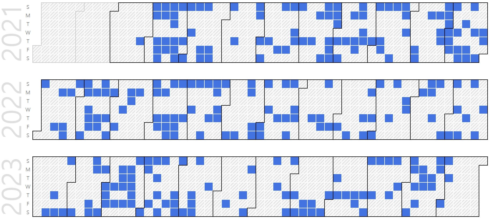

Heuijee Yun (Integrated Ph.D. Candidate)
B.S. Student as a Candidate of Ph.D Course. |
Repository Commit History
|  |
Introduction
Full Bio Sketch
Ms. Yun is currently doing undergraduate degree in electronic engineering at Kyungpook National University Daegu, Republic of Korea. Her research interests include simulating and executing autonomous driving. Her research was focused on designing simulation that is sophisticated and applicable to real-world simulation. Currently, she is focusing on integrating camera and LiDAR data to train with deep neural networks with that data to achieve more accurate object recognition by using LS1028ardb.
Research Topic
 Among the functions of self-driving cars, avoidance after object recognition is important. Because camera data alone is insufficient to recognize and avoid people or obstacles, we train objects as deep neural networks with data combined with LiDAR data. Then we can apply the educated weight using Yolo, Tensorflow and Opencv for object detection. As a result, Obstacle avoidance algorithms can be executed more accurately and faster.
Among the functions of self-driving cars, avoidance after object recognition is important. Because camera data alone is insufficient to recognize and avoid people or obstacles, we train objects as deep neural networks with data combined with LiDAR data. Then we can apply the educated weight using Yolo, Tensorflow and Opencv for object detection. As a result, Obstacle avoidance algorithms can be executed more accurately and faster.
Publications
Journal Publications (SCI 1, KCI 1)
Heuijee Yun and Daejin Park. Virtualization of Self-Driving Algorithms by Interoperating Embedded Controllers on Game Engine for Digital Twining Autonomous Vehicle (SCI) Electronics, 2021.
Heuijee Yun and Daejin Park. Efficient Object Recognition by Masking Semantic Pixel Difference Region of Vision Snapshot for Lightweight Embedded Systems (KCI) Journal of the Korea Institute of Information and Communication Engineering, 26(6):813-826, 2022.
Heuijee Yun and Daejin Park. Efficient Object Detection based on Masking Semantic Segmentation Region for Lightweight Embedded Processors (SCI) (Under Review) IEEE Access, 2022.
Heuijee Yun and Daejin Park. Low-Power Lane Detection Unit based on Sliding-based Parallel Segment Detection Accelerator for Lightweighted Automotive Microcontrollers (SCI) (On Writing) IEEE Transactions on VLSI Systems, 2022.
Conference Publications (Intl. 3)
Heuijee Yun and Daejin Park. Simulation of Self-driving System by implementing Digital Twin with GTA5 In IEEE ICEIC 2021, 2021.
Heuijee Yun and Daejin Park. Yolo-based Realtime Object Detection using Interleaved Redirection of Time-Multiplxed Streamline of Vision Snapshot for Lightweighted Embedded Processors In 2021 International Symposium on Intelligent Signal Processing and Communication Systems (ISPACS), 2021.
Heuijee Yun and Daejin Park. Mitigating Overflow of Object Detection Tasks Based on Masking Semantic Difference Region of Vision Snapshot for High Efficiency In 2022 IEEE International Conference on Artificial Intelligence in Information and Communication (ICAIIC), 2022.
Heuijee Yun and Daejin Park. FPGA Realization of Lane Detection Unit using Sliding-based Parallel Segment Detection for Buffer Memory Reduction (On Writing) In IEEE ICCE 2023, 2023.
Participation in International Conference
IEEE ICEIC 2021, Jeju, Korea
IEEE ISPACS 2021, Jeju, Korea
IEEE ICAIIC 2022, Jeju, Korea